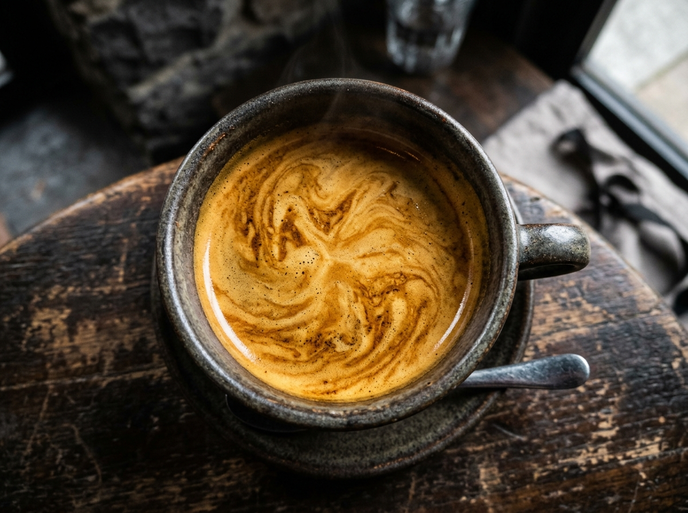

Mengawal Perjalanan Seduhan Kopi Terbaik Sejak Tahun 2017 Hingga Saat Ini
Berawal dari semangat komunitas seduh rumahan di sudut Kota Malang pada tahun 2017, Alat Kopi Malang (AKM) terus bertumbuh menjadi ekosistem peralatan kopi terlengkap—menghadirkan showroom mesin espresso komersial, pusat servis bersertifikat, akademi barista, hingga kolaborasi roastery & slow bar pertama di Malang Raya.
Dari Ruang Seduh Sederhana Menjadi Rumah Bagi Para Pecinta Kopi
Pada tahun 2017, geliat kopi gelombang ketiga (third-wave coffee movement) mulai tumbuh pesat di Kota Malang. Namun, banyak home brewer, mahasiswa, maupun perintis kedai kopi lokal yang kesulitan memperoleh peralatan seduh kopi original dengan harga yang jujur serta tempat berkonsultasi teknis secara langsung.
Berangkat dari keresahan tersebut, Alat Kopi Malang didirikan. Kami memulai langkah dari ruang etalase sederhana yang menyediakan dripper V60, kertas filter, timbangan digital, dan hand grinder manual. Bagi kami, setiap alat kopi yang keluar dari toko harus disertai edukasi kalibrasi agar pelanggan mampu menghasilkan cangkir kopi terbaiknya.
Seiring berjalannya waktu hingga saat ini, kepercayaan ribuan pelanggan dan ratusan pemilik kafe membawa Alat Kopi Malang bertransformasi. Kami tidak lagi sekadar toko ritel alat kopi, melainkan mitra strategis yang mendampingi perjalanan bisnis kedai kopi dari tahap perencanaan alat, pelatihan barista, penyediaan biji kopi specialty, hingga jaminan perawatan mesin jangka panjang.

100% Original & Bergaransi Resmi
Authorized Partner Hario, Comandante, Fellow, Timemore & Gemilai
Jejak Langkah Alat Kopi Malang (2017 – Saat Ini)
Sembilan tahun lebih perjalanan penuh inovasi, melayani dari seduhan manual pertama hingga ribuan ekstraksi espresso komersial setiap harinya.
Kelahiran Alat Kopi Malang & Komunitas Manual Brew
Alat Kopi Malang resmi berdiri di Kota Malang sebagai toko spesialis perlengkapan seduh kopi manual (manual brew gear) dan aksesoris barista. Menjadi titik kumpul bagi para home brewer dan mahasiswa untuk berdiskusi rasio seduh V60, French Press, Vietnam Drip, serta kalibrasi hand grinder.
Memasuki Lini Mesin Espresso & Pengadaan Coffee Shop Lokal
Merespons pesatnya pertumbuhan kedai kopi di Malang Raya dan Kota Batu, Alat Kopi Malang memperluas katalog produk ke lini mesin espresso semi-komersial, grinder elektrik flat burr, dan perlengkapan bar profesional. Mulai dipercaya menangani paket setup bar untuk puluhan kafe rintisan baru.
Transformasi E-Commerce Nasional & Pembukaan Divisi Servis Mesin
Ketika budaya menyeduh kopi di rumah (Home Cafe) meningkat tajam, kami memperkuat jaringan distribusi online via Marketplace dan layanan pesan antar instan WhatsApp ke seluruh Indonesia. Pada periode ini pula, kami membentuk tim teknisi khusus untuk melayani perawatan, kalibrasi, dan servis mesin kopi komersial.
Peresmian Showroom Ruko Tlogomas Square & Lisensi Brand Global
Hadir lebih dekat dan nyaman dengan meresmikan Showroom fisik di Ruko Tlogomas Square Kav. 34, Lowokwaru, Kota Malang. Mengusung konsep Hands-on Experience, pengunjung dapat mencoba menarik shot espresso dan menguji kehalusan grinder dari brand ternama dunia seperti Comandante, Hario, Fellow, Timemore, dan Gemilai sebelum membeli.
Peluncuran Barista Academy, Konsinyasi Resmi & Pengadaan B2B
Memperkuat posisi sebagai pusat solusi bisnis kopi melalui 4 program unggulan: Training Barista & Sensory Class, Jasa Servis & Overhaul Mesin, Program Titip Jual (Konsinyasi) Alat Kopi yang transparan, serta Pengadaan Barang B2B bagi lebih dari 250 mitra coffee shop, hotel, dan restoran di Jawa Timur.
Kolaborasi Alat Kopi Malang X Sanubari Roastery & Platform Digital Terpadu
Saat ini, Alat Kopi Malang menghadirkan terobosan baru melalui kolaborasi strategis bersama Sanubari Roastery—menyatukan Showroom Alat Kopi, Laboratorium Roastery berkurva digital, Slow Bar Manual Brew, dan Sensory Room berstandar SCA. Didukung dengan website belanja satu klik, video reels interaktif, dan layanan konsultasi 24 jam.
Visi, Misi & Empat Pilar Ekosistem Kami
Visi Kami
Menjadi pusat ekosistem peralatan kopi, edukasi barista, dan layanan teknis paling terpercaya di Indonesia yang memberdayakan setiap penikmat kopi rumahan maupun pelaku bisnis kedai kopi untuk tumbuh berkelanjutan.
Misi Kami
- Menyediakan kurasi alat seduh dan mesin kopi 100% original dengan jaminan garansi resmi dan harga terbaik.
- Memberikan layanan purna jual, ketersediaan suku cadang asli, dan teknisi ahli yang responsif.
- Menghadirkan ruang edukasi terbuka melalui sesi slow bar, weekly cupping, dan pelatihan barista.
- Membangun kemitraan jangka panjang bersama petani kopi lokal, roastery, dan pemilik kedai kopi.
1. Showroom & Retail
Koleksi terlengkap mesin espresso, grinder manual & elektrik, alat manual brew, serta biji kopi specialty siap kirim setiap hari.
2. Jasa Servis Resmi
Bengkel spesialis perawatan berkala, kalibrasi burr grinder, descaling boiler, dan penggantian sparepart mesin kopi komersial.
3. Barista Academy
Program pelatihan seduh manual, kalibrasi espresso, basic latte art, hingga kelas sensorik standar protokol SCA.
4. B2B & Titip Jual
Pengadaan paket usaha coffee shop baru dari nol serta layanan konsinyasi titip jual mesin kopi yang aman dan terverifikasi.
Ruang Kolaborasi & Showroom Alat Kopi Malang
Kami mengundang Anda untuk datang langsung, mencoba peralatan kopi impian Anda, dan berdiskusi santai bersama tim spesialis serta barista kami di Kota Malang:
Showroom Alat Kopi Malang — Tlogomas